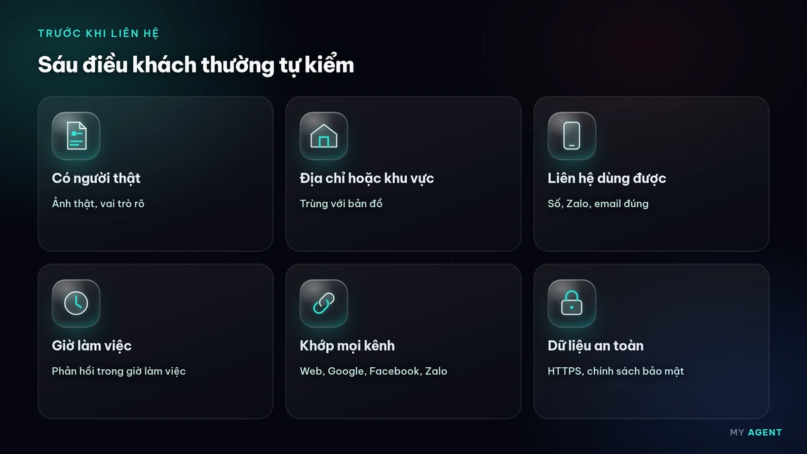
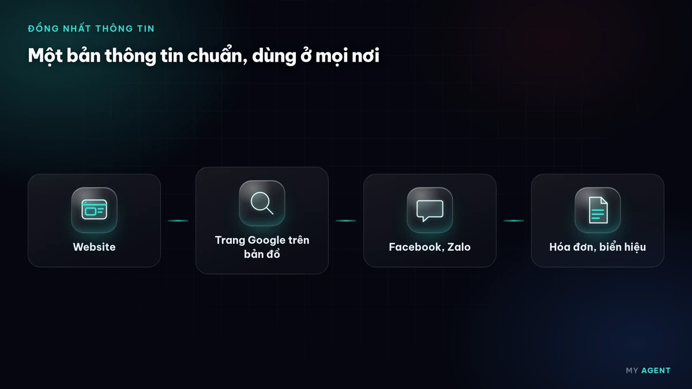
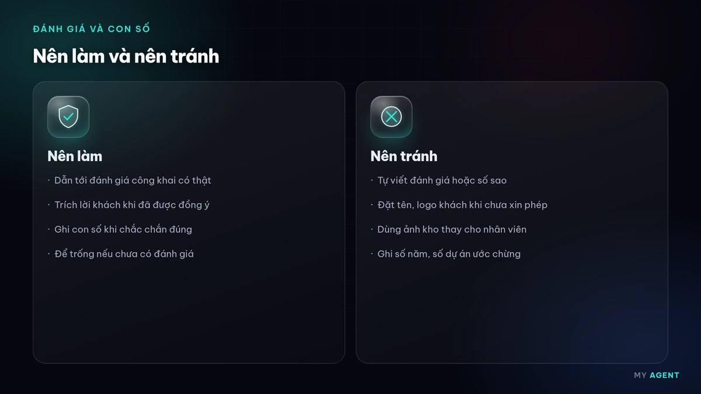

Trước khi gọi điện hay gửi yêu cầu, nhiều khách mở trang Giới thiệu và trang Liên hệ để tự trả lời một câu: doanh nghiệp này có thật không, và nếu có chuyện thì tìm họ ở đâu? Câu hỏi đó giống nhau dù anh/chị mở tiệm sửa xe, studio chụp ảnh, xưởng in hay văn phòng kế toán. Bài này không nhắc lại mỗi trang nên viết những mục gì (phần đó đã có ở bài nội dung trên website: mỗi trang nên viết gì). Ở đây chúng tôi tập trung vào một việc: làm sao để hai trang này khiến khách tin, bằng thông tin thật và kiểm chứng được.

Niềm tin đến từ thông tin kiểm chứng được
Khách không tin vì website tự khen mình. Khách tin khi những gì trang viết khớp với những gì họ tự kiểm được: gọi số trên web thì có người nghe, địa chỉ trên web trùng với bản đồ, tên trên web trùng với tên trên hóa đơn hay biển hiệu. Vì vậy, thay vì thêm câu như "uy tín", "chất lượng hàng đầu", hãy thêm chi tiết mà khách có thể đối chiếu:
- Tên doanh nghiệp hoặc tên thương hiệu viết giống nhau ở mọi nơi.
- Doanh nghiệp làm việc gì, cho ai, ở khu vực nào.
- Cách làm việc: nhận yêu cầu thế nào, trao đổi ra sao, bàn giao hoặc giao hàng thế nào.
- Ai sẽ phụ trách khi khách liên hệ: bộ phận, vai trò, hoặc người đại diện nếu doanh nghiệp muốn công khai.
Một câu cụ thể như "chúng tôi nhận yêu cầu qua điện thoại, Zalo và form, phản hồi trong giờ làm việc" có sức nặng hơn nhiều câu quảng cáo chung chung.
Trang Giới thiệu: cho khách thấy người thật, việc thật
Trang Giới thiệu không cần dài. Điều quan trọng là khách đọc xong thấy phía sau website có một đơn vị đang hoạt động thật.
- Ảnh thật của nơi làm việc, sản phẩm hoặc công việc. Một góc xưởng, kệ hàng, bàn làm việc hay công trình đang thi công đều được. Ảnh ít nhưng là của mình vẫn tốt hơn ảnh đẹp lấy từ nơi khác.
- Đội ngũ, nếu muốn công khai. Có thể ghi vai trò thay vì tên đầy đủ. Không dùng ảnh người mẫu từ kho ảnh rồi để như thể đó là nhân viên.
- Mốc thời gian có thật. Chỉ ghi năm thành lập, số năm hoạt động hay số dự án khi anh/chị chắc chắn về con số đó. Nếu chưa chắc, bỏ qua; không ai mất niềm tin vì thiếu con số, nhưng dễ mất niềm tin khi phát hiện con số sai.
- Giấy phép, chứng nhận hoặc thành viên hiệp hội, nếu có thật và còn hiệu lực. Nên ghi rõ tên và nơi cấp để khách tự tra lại được.
- Phạm vi đang nhận và chưa nhận. Nói rõ việc không làm cũng giúp khách tin phần còn lại.
Thông tin liên hệ: đầy đủ, đúng và dùng được
Trang Liên hệ là nơi niềm tin được thử ngay: khách bấm số, nhắn Zalo, mở bản đồ. Một lỗi nhỏ ở đây (số cũ, Zalo cá nhân đã nghỉ việc, bản đồ chỉ sai chỗ) có thể làm mất một khách đã muốn mua.
- Số điện thoại, Zalo, email bấm được trên điện thoại và đang có người trực. Nên dùng email theo tên miền riêng nếu có, vì dễ nhận ra hơn hộp thư miễn phí.
- Địa chỉ nếu khách có thể đến; kèm bản đồ hoặc chỉ dẫn ngắn. Nếu làm tại nhà khách hoặc làm trực tuyến, ghi rõ khu vực phục vụ thay vì để trống.
- Giờ làm việc và thời gian phản hồi. Hứa vừa sức: phản hồi trong giờ làm việc, và nói rõ ngày nghỉ.
- Form ngắn, có lời nhắn sau khi gửi. Khách cần biết yêu cầu đã tới và khi nào được liên hệ lại.
- Thông tin pháp lý cơ bản nếu doanh nghiệp đã đăng ký, như tên đăng ký và địa chỉ trụ sở. Nếu website bán hàng hoặc nhận thanh toán trực tuyến, nên kiểm tra quy định hiện hành về thông tin phải công khai.
Thông tin liên hệ cũng nên xuất hiện ở chân trang (footer) trên mọi trang, để khách không phải đi tìm.
Đồng nhất trên mọi kênh
Khách thường xem nhiều nơi trước khi quyết định: website, trang Google trên bản đồ, Facebook, Zalo, sàn thương mại điện tử. Nếu mỗi nơi ghi một số điện thoại, một giờ mở cửa hay một địa chỉ khác nhau, khách sẽ nghi ngờ, và Google cũng khó xác định đâu là thông tin đúng.

Cách làm đơn giản: chọn một bản chuẩn gồm tên, địa chỉ hoặc khu vực, số điện thoại, giờ làm việc, rồi dùng đúng bản đó ở mọi nơi. Mỗi lần đổi số hay chuyển địa điểm, cập nhật cùng lúc tất cả các kênh. Với trang doanh nghiệp trên Google, nên làm theo nguyên tắc trình bày thông tin doanh nghiệp của Google; các bước chi tiết có ở bài Google Business Profile.
Về mặt kỹ thuật, website có thể khai báo tên, logo, địa chỉ và cách liên hệ bằng dữ liệu có cấu trúc, theo hướng dẫn về dữ liệu có cấu trúc Organization của Google. Khai báo này chỉ giúp Google hiểu đúng; không phải cách để được xếp hạng cao hơn, và thông tin khai báo phải trùng với nội dung khách thấy trên trang.
Đánh giá và lời khen: chỉ dùng cái có thật
Đây là phần dễ làm mất niềm tin nhất nếu làm sai. Nguyên tắc của My Agent khi làm web cho khách là: không viết đánh giá giả, không đặt tên khách hay logo đối tác khi chưa được đồng ý, không thêm số sao tự đặt ra.

Nếu đã có đánh giá thật, có thể dẫn liên kết tới nơi khách để lại đánh giá công khai (như trang Google trên bản đồ) để người xem tự đọc. Nếu trích lời khách trên website, cần được khách đồng ý và giữ nguyên ý. Google cũng không cho phép tương tác giả mạo, trong đó có đánh giá giả, theo chính sách nội dung bị cấm và bị hạn chế. Chưa có đánh giá thì cứ để trống; một trang trung thực, thông tin rõ vẫn tạo được niềm tin.
Thêm vài chi tiết nhỏ giúp khách yên tâm
- HTTPS và trình duyệt không cảnh báo "không an toàn", nhất là ở trang có form. Phần này thuộc bài bảo mật website cơ bản.
- Chính sách bảo mật ngắn, nói rõ thông tin trong form dùng vào việc gì, như chính sách bảo mật của My Agent.
- Ngày cập nhật cho trang Giới thiệu hoặc thông tin liên hệ, nếu thông tin hay thay đổi.
- Cập nhật khi có thay đổi: đổi số, đổi giờ, chuyển địa điểm hay ngừng một dịch vụ thì sửa ngay. Việc này nằm trong chăm sóc website sau khi bàn giao.
Những chi tiết này nằm trong nhóm tiêu chí ở bài website chuyên nghiệp cần gì, và nên có ngay từ khi làm web; danh sách hạng mục thường có trong gói nằm ở bài thiết kế web trọn gói gồm những gì.
My Agent hỗ trợ gì
My Agent hỗ trợ thiết kế website với trang Giới thiệu và Liên hệ viết từ thông tin thật của doanh nghiệp, hồ sơ doanh nghiệp, và Google Maps để thông tin trên bản đồ khớp với website. Anh/chị có thể xem trang về chúng tôi như một ví dụ. Chúng tôi phản hồi trong giờ làm việc; nếu muốn trao đổi, hãy liên hệ. Giá tham khảo, chưa bao gồm VAT, nằm tại bảng giá.
Câu hỏi thường gặp
Doanh nghiệp mới, chưa có đánh giá thì trang Giới thiệu nên viết gì?
Viết điều có thật: làm việc gì, cho ai, ở đâu, cách nhận và xử lý yêu cầu, ảnh thật nơi làm việc hoặc sản phẩm. Không cần đánh giá để bắt đầu. Khi có khách thật đánh giá công khai, có thể dẫn liên kết tới đó sau.
Làm tại nhà hoặc làm trực tuyến, không có cửa hàng thì ghi địa chỉ thế nào?
Không bắt buộc công khai địa chỉ nhà riêng. Hãy ghi rõ khu vực phục vụ, cách hẹn gặp và cách liên hệ. Điều quan trọng là thông tin đúng và giống nhau trên mọi kênh.
Có nên ghi tên và ảnh nhân viên lên trang Giới thiệu không?
Tùy doanh nghiệp và chỉ khi nhân viên đồng ý. Có thể ghi vai trò (phụ trách kỹ thuật, chăm sóc khách) thay cho tên đầy đủ. Không dùng ảnh người mẫu từ kho ảnh để thay cho nhân viên.
Khai báo dữ liệu có cấu trúc cho doanh nghiệp có giúp tăng thứ hạng trên Google không?
Không nên kỳ vọng như vậy. Dữ liệu có cấu trúc giúp Google hiểu đúng tên, địa chỉ và cách liên hệ, với điều kiện thông tin đó trùng với nội dung trên trang. Niềm tin của khách vẫn đến từ thông tin thật và dùng được.
Từ khóa: trang giới thiệu · thông tin liên hệ · niềm tin · doanh nghiệp nhỏ